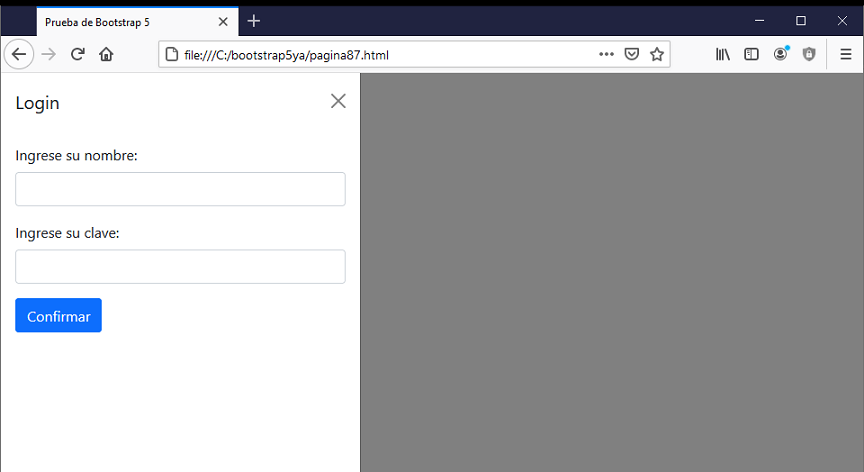

La componente Offcanvas permite crear una barra lateral oculta que se hará visible cuando se dispare un evento. Muy útil en dispositivos móviles donde tenemos poco espacio en pantalla.
Offcanvas es un componente de la barra lateral que se puede alternar a través de JavaScript para que aparezca desde el borde izquierdo, derecho, superior o inferior de la ventana del navegador.
Comparten muchas similitudes con los diálogos que dispone Bootstrap, igual que los diálogos solo se puede mostrar una componente Offcanvas a la vez.
Veamos un ejemplo para su implementación:

El código necesario es:
<!doctype html>
<html>
<head>
<title>Prueba de Bootstrap 5</title>
<meta charset="utf-8">
<meta name="viewport" content="width=device-width, initial-scale=1, shrink-to-fit=no">
<link href="https://cdn.jsdelivr.net/npm/bootstrap@5.0.0/dist/css/bootstrap.min.css" rel="stylesheet"
integrity="sha384-wEmeIV1mKuiNpC+IOBjI7aAzPcEZeedi5yW5f2yOq55WWLwNGmvvx4Um1vskeMj0" crossorigin="anonymous">
</head>
<body>
<div class="container">
<a class="btn btn-primary" data-bs-toggle="offcanvas" href="#offcanvas1">
Login
</a>
<div class="offcanvas offcanvas-start" tabindex="-1" id="offcanvas1">
<div class="offcanvas-header">
<h5 class="offcanvas-title">Login</h5>
<button type="button" class="btn-close text-reset" data-bs-dismiss="offcanvas"></button>
</div>
<div class="offcanvas-body">
<form>
<div class="mb-3">
<label for="nombre" class="form-label">Ingrese su nombre:</label>
<input type="text" class="form-control" id="nombre" name="nombre">
</div>
<div class="mb-3">
<label for="clave" class="form-label">Ingrese su clave:</label>
<input type="password" class="form-control" id="clave" name="clave">
</div>
<button type="submit" class="btn btn-primary">Confirmar</button>
</form>
</div>
</div>
</div>
<script src="https://cdn.jsdelivr.net/npm/bootstrap@5.0.0/dist/js/bootstrap.bundle.min.js"
integrity="sha384-p34f1UUtsS3wqzfto5wAAmdvj+osOnFyQFpp4Ua3gs/ZVWx6oOypYoCJhGGScy+8"
crossorigin="anonymous"></script>
</body>
</html>
Mediante la clase 'offcanvas' creamos este panel oculto, que en este caso aparece de izquierda a derecha gracias a la clase 'offcanvas-start':
<div class="offcanvas offcanvas-start" tabindex="-1" id="offcanvas1">
Definimos una cabecera mediante la clase 'offcanvas-header':
<div class="offcanvas-header">
En la cabecera definimos un botón que será la cruz para cerrar el panel:
<button type="button" class="btn-close text-reset" data-bs-dismiss="offcanvas"></button>
Por otro lado mediante la clase 'offcanvas-body' definimos el área donde dispondremos los distintos controles visuales que se deben mostrar cuando el offcanvas se encuentre visible (En nuestro ejemplo disponemos un formulario de login):
<div class="offcanvas-body">
<form>
<div class="mb-3">
<label for="nombre" class="form-label">Ingrese su nombre:</label>
<input type="text" class="form-control" id="nombre" name="nombre">
</div>
<div class="mb-3">
<label for="clave" class="form-label">Ingrese su clave:</label>
<input type="password" class="form-control" id="clave" name="clave">
</div>
<button type="submit" class="btn btn-primary">Confirmar</button>
</form>
</div>
Podemos utilizar las clases: